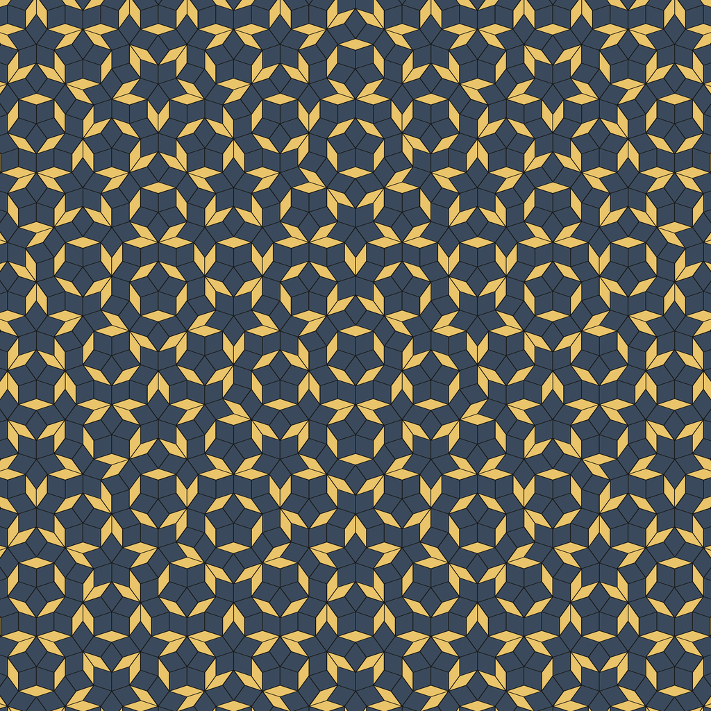

Hello, and welcome to Moth Hack 2026
What the noise remembers
Twenty-two little quantum worlds you can play with, spread across all eleven Moth Hack challenges. Pick one, press play, and poke at it. No physics degree needed.
Here's the thread that ties them together. A moth survives by staying unseen. A bat hunts by listening to echoes. A qubit can never be looked at directly, and every measurement of it is noisy. These pieces follow one signal through that chase: it hides, noise eats it, and you rebuild it. Every one runs on real Atlas quantum jobs at the most qubits its engine allows, and in every one you're the one at the controls.

 Original20-qubit blur
Original20-qubit blur
Try it: drag across the picture. The right side is a real blur-v1 job (20 qubits, Atlas simulator).
Meet the cast
Every piece has its own character. Hover or tap one to say hello, then click to play.
Pick a character to see what they're up to.
New here? Start with one of these
Three quick ways in. Each takes about a minute.
How every piece works
- Pick a world. Use the cast above or the challenge list below. Every piece opens on its own page.
- Play with it. You drive everything. Nothing moves or makes a sound until you click.
- Peek at the science. Each page has drawers explaining what the quantum computer did, and what the piece does not claim.
Qubit flight path
Each piece runs at its engine's ceiling. Outlined bars: the most qubits each piece used on Atlas simulators. Solid bars: qubits that ran on a real IBM chip.
Challenges
Open a challenge to see every piece made for it. Every card links to a playable page.
Real jobs only
Every quantum-derived image, sound and number on these pages is a downloaded output of a completed Atlas job. The pages replay those cached outputs, because a published page can't call the API live. Each piece lists its job IDs.
Simulator or hardware, always labelled
Most engines run on Atlas's classical simulators of quantum circuits. Pieces that ran on IBM hardware say which backend did the work. Hardware access was confirmed with a coin toss on ibm_fez (job 1736b3bb). Named backends: ibm_fez and ibm_marrakesh (Heron, 156 qubits) and ibm_miami (Nighthawk, 120 qubits).
Analogies are named as analogies
A quantum blur over a LIGO spectrogram is not squeezed light. A reservoir trained on whale codas does not translate them. A disputed theory of smell stays disputed. Each piece has a "what this does not claim" drawer.
Data licences checked at the source
We used only data whose licence we confirmed on its source page, or synthetic data labelled as synthetic. Where a licence was unclear (FlyWire, Herculaneum scrolls), we switched to an open alternative or a generated stand-in.
An independent entry to Moth Hack 2026, built on Moth Quantum's Atlas engines. Not an official Moth Quantum page.